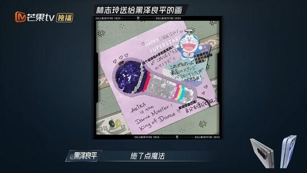

台湾名模林志玲的老公、出身自男团「放浪兄弟」的AKIRA（黑泽良平），近日参与大陆实境选秀节目「披荆斩棘的哥哥」第4季录制，事前收到妻子写信、「多啦A梦麦克风」的画鼓励，只不过他从台湾的国民姊夫，变成「中国女婿」。
AKIRA参加节目，舍弃用了18年的艺名，以本名黑泽良平示人，并用中文自我介绍完，也仔细分析自身在亚洲演艺圈的形象。当他听闻「中国观众叫你是中国女婿」，他双手合十道谢，表示：「我很开心，在这仅有一次的人生中，能遇到命定之人。」
聊到与林志玲结婚，AKIRA笑说：「我很开心在这仅有一次的人生中，能遇到命定之人，她至今为止走过的道路、获得过的成就，我觉得都是非常珍贵的。」被问到参加节目之前太太是否有给什么建议？他表示：「有的，我收到她写给我的信。」他也提到林志玲画了一幅多啦A梦的麦克风的画，还有英文：「AKIRA is the Dance Master！King of Dance！」他解释图中的意义：「魔法麦克风和我的表演施了点魔法，说我的舞蹈已经在唱着歌了，鼓励我要有自信。」
日前参战画面正式曝光，AKIRA的首个舞台表演合作MIYAVI（石原崇雅），2人火中热舞、弹吉他的2分钟预告，震惊台湾、日本、中国观众。两人以一黑一白的服装做出区分，AKIRA再展现野兽派的舞蹈，以及拿手的Krump舞步，趴地起身动作俐落又专业。
